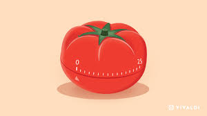
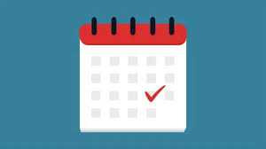

Conquer your day with precision and purpose. Master your minutes with our powerful tools, transforming ordinary moments into extraordinary achievements.

POMODORO TIMER
Experience 25 minutes of focused work, followed by a refreshing 5-minute break. After four cycles, enjoy a well-deserved 15-minute break.
Start
TO-DO LIST
List duties in one place, click to mark completed tasks. Stay organized and satisfied as you navigate your list, leaving no room for overlooked responsibilities
Start

CALENDAR SCHEDULE
Used to manage your upcoming events and tasks systematically. Also automatically mark on google calender, with pop notifications for remiders. Notifications for left out events.
Start